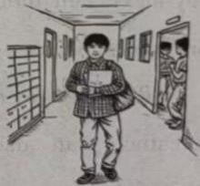

2026年北京市中考英语试题 · 完形填空 第13、14、15、16、17、18、19、20题
二、完形填空（每题1分，共8分）
阅读下面的短文，掌握其大意，然后从短文后各题所给的A、B、C、D四个选项中，选择最佳选项。
The day I walked into Westfield High School, I felt like everyone in the hallway somehow knew I was the new kid. Three weeks earlier, my family moved across the country after my mum changed jobs. ____13____ a new school in the middle of the term felt like hitting reset on my whole life.

At lunch that first day, I sat at a corner table pretending (假装) to be very interested in my phone while ____14____ searching for “how to survive being the new kid”. Teen articles kept saying the same thing—feeling worried during a school transition (过渡期) is normal. That helped a little, but it still felt ____15____.
The first week was awful. I got lost looking for the chemistry class, mispronounced a teacher’s name, and accidentally walked into the wrong classroom twice. But something small started to ____16____ when a boy asked if I wanted to join his group in the science lab. That made the whole day easier. One thing I learned quickly is that most students don’t ____17____ you as much as you think. Everyone is busy worrying about their own things.
Slowly, I found a way to ____18____. Instead of trying to do many big things right away, I focused on simple things, like learning two classmates’ names a week and asking one question in a class. Those small wins slowly built up my confidence.
By the end of the term, things looked very ____19____. I joined the photography club and started hanging out with my classmates after school. Changing schools in the middle of the term was not easy, but it taught me something important about resilience (适应力) and ____20____. Feeling uneasy does not last forever. If you are the new kid right now, hang in there. The hallway that feels strange today may become the place where you begin your new stage of life.
13. A. StartingB. VisitingC. SupportingD. Enjoying
14. A. suddenlyB. excitedlyC. angrilyD. secretly
15. A. unwiseB. unreasonableC. uncomfortableD. unimportant
16. A. returnB. changeC. increaseD. move
17. A. pushB. judgeC. protectD. respect
18. A. show upB. stand outC. come backD. fit in
19. A. differentB. strangeC. commonD. serious
20. A. honestyB. freedomC. confidenceD. cooperation